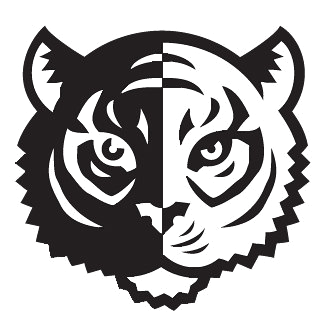

Education
Northwestern UniversitySeptember 2020 - June 2024 (expected)
Relevant Coursework: Data Structures and Algorithms, Machine Learning, Operating Systems, Foundations of Data Science, Human-Computer Interaction, AI and Experimental Narrative, Statistics for Engineers, Economics for Engineers |
|
Lick-Wilmerding High SchoolAugust 2016 - June 2020
Relevant Coursework: Programming Methodology (taken through Stanford University), Honors Calculus, Honors Physics, Circuits and Electronics: Analog and Digital, Woodworking |
 |